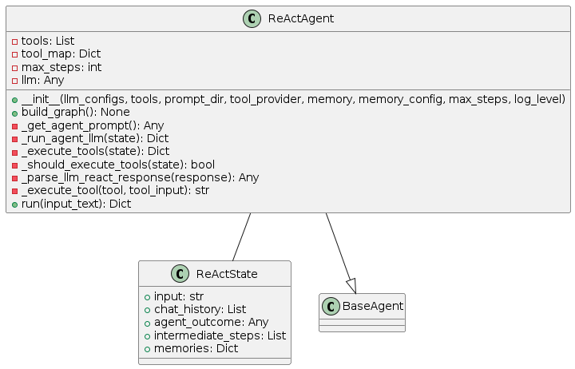
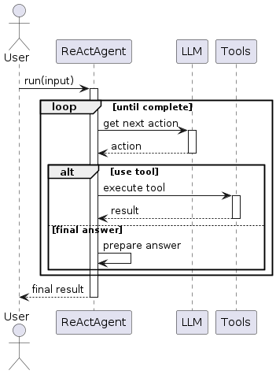

ReAct Pattern
Overview
The ReAct (Reason + Act) pattern implements a cycle of reasoning followed by action execution. It’s one of the foundational agent patterns that combines an LLM’s ability to reason with the capability to execute tools. The agent repeatedly follows a cycle of:
Reasoning: The LLM analyzes the current state, including the task and any previous observations
Acting: The agent executes an action (typically a tool) based on its reasoning
Observing: The agent collects the result of the action
Repeating: The cycle continues until a final answer is reached
This pattern is implemented using a state graph with two primary nodes: the agent node (for reasoning) and the tool execution node.
Diagrams
Class Structure

The ReAct pattern is implemented through:
ReActState: Maintains the current state of execution, including input, chat history, intermediate steps, and agent outcome
ReActAgent: The primary class that implements the pattern, containing methods for running the agent LLM, executing tools, and managing the state transitions
BaseAgent: The abstract base class from which ReActAgent inherits
Execution Flow

The execution flow follows:
User provides input to the ReActAgent
Agent examines the input and thinks about what to do
Agent decides either to use a tool or provide a final answer
If using a tool, the agent executes it and receives the result
Agent considers the tool’s result in the next thinking step
Cycle continues until the agent decides on a final answer
Final answer is returned to the user
State Transitions

The ReAct pattern transitions through these states:
Initialized: Agent is created but not yet ready
Ready: Agent is ready to process input
Processing: Agent is actively working on the task
Thinking: Agent is reasoning about what to do next
Tool Execution: Agent is using a tool
Final state is reached when the agent determines a final answer
Use Cases
Question Answering: When questions require factual information that might need lookup operations
Task Automation: For multi-step tasks requiring both reasoning and use of tools
Information Gathering: When the agent needs to collect information from multiple sources
Decision Making: For situations requiring both analysis and action
Interactive Assistance: When users need help completing tasks that involve multiple steps
Implementation Guide
Here’s a simple example of using the ReActAgent:
from agent_patterns.patterns import ReActAgent
from agent_patterns.core.tools import ToolRegistry
from langchain.tools import tool
# Define a simple tool
@tool
def search(query: str) -> str:
"""Search for information about a topic."""
# In a real implementation, this would connect to a search engine
return f"Results for {query}: Some relevant information..."
# Create tool registry with the search tool
tool_registry = ToolRegistry([search])
# Configure the LLM
llm_configs = {
"default": {
"provider": "openai",
"model": "gpt-4o",
"temperature": 0.7
}
}
# Initialize the ReAct agent
agent = ReActAgent(
llm_configs=llm_configs,
tool_provider=tool_registry
)
# Run the agent
result = agent.run("What is the capital of France and what's its population?")
print(result)
Example References
The examples directory contains implementations of the ReAct pattern:
examples/react_simple.py: A basic ReAct agent implementationexamples/react_with_memory.py: ReAct agent with memory capabilities
Best Practices
Keep tool descriptions clear and specific to help the LLM decide when to use them
Set an appropriate
max_stepsvalue to prevent infinite loopsUse memory when handling complex or multi-turn interactions
Structure prompts to encourage step-by-step reasoning before actions
Handle tool execution errors gracefully to allow the agent to recover
Add logging for better debugging and transparency